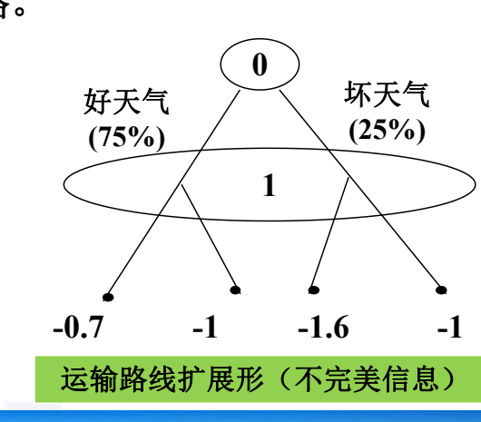
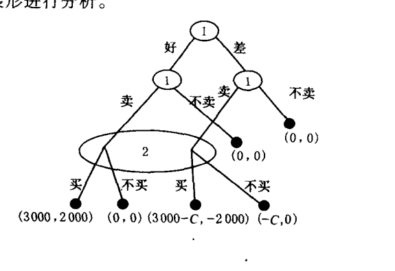
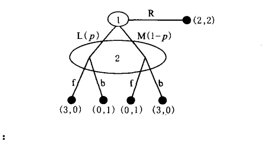
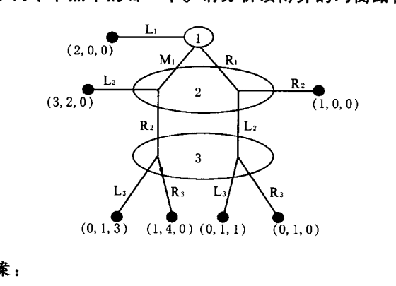

第五章 完全但不完美信息动态博弈知识详解
一、学习主线
第五章的中心问题是：动态博弈中，行动有先后，但后行动者未必知道前面到底发生了什么。这类问题称为“完全但不完美信息动态博弈”，本章的核心均衡概念是完美贝叶斯均衡。
核心为：如果一个信息集包含多个节点，后行动者将无法直接知道自己在哪个节点上行动，因此必须给出他对各节点的概率判断，并要求这种判断与策略相互一致。
二、基本概念辨析
1. 完全但不完美信息动态博弈（此为重点）
各博弈方对策略、得益等情况有完全信息，但对博弈进程没有完美信息的动态博弈。
这里要分清两层信息：
- “完全信息”说的是得益、策略空间、博弈结构等规则信息是清楚的。（关于博弈固有的条件是完全清楚的）——静态博弈和动态博弈都会出现
- “不完美信息”说的是行动历史不完全可观察，轮到某个博弈方行动时，他可能不知道前面某个博弈方究竟选了哪条路径。（用共节点表示）——仅仅存在于动态博弈中
所以它不是“不知道别人偏好或成本”的问题，而是“不知道已经走到哪个节点”的问题。
完全但不完美信息博弈的扩展形表示中采取共节点的形式进行表示。

此外，要注意的是，通过共节点的博弈不能被称为子博弈。
完全但不完美信息博弈的典型博弈为二手车交易博弈：买方看到车进入市场，但不能直接知道车是好车还是差车，这就是典型的不完美信息。
2. 判断（此为重点）
判断是本章最容易被忽略但最关键的概念。判断可以解释为：在多节点信息集处，行动者对博弈到达该信息集中各节点的概率分布。
例如买方面对“有车出售”这一信息集时，必须判断：
p(g|s)：看到出售时车是好车的概率；p(b|s)：看到出售时车是差车的概率。
买方是否购买，不是直接由真实车况决定，而是由这些判断下的期望得益决定。因此完美贝叶斯均衡必须同时写出“策略”和“判断”。
3. 完美贝叶斯均衡（此为重点）
完美贝叶斯均衡由策略组合和判断共同构成。有以下四项要求：
- 概率判断：在各信息集处，行动者必须对信息集中每个节点的到达概率有判断。
- 序列理性：给定判断，每个博弈方在每个行动处都要选择能实现最大得益的行动。
- 均衡路径上的判断符合均衡策略：均衡路径上，判断由贝叶斯法则和均衡策略推出。
- 非均衡路径上的判断符合均衡策略：不在均衡路径上的多节点信息集处，判断也应尽量与贝叶斯法则和可能的均衡策略相符。
考试或作业中判断一个策略组合是否为完美贝叶斯均衡时，不能只验证“没人愿意偏离”。而应当按四步检查（可以以补充题9为例）：
- 是否写出每个相关信息集上的概率判断；
- 给定这些判断，各方选择是否最优；
- 在均衡路径上，判断是否能由策略推出；
- 在非均衡路径上，判断是否与策略和贝叶斯一致性要求冲突。
4. 市场均衡类型（往年资料部分）
课本章末还列出二手车模型中的市场均衡类型：
- 市场完全成功：好商品进入市场，差商品不进入市场，买方愿意买，实现最大贸易利益。
- 市场完全失败：存在潜在交易利益，但所有卖方都担心卖不出去而不卖，市场不能运作。
- 市场部分成功：好差商品都进入市场，买方也都买。
- 市场接近失败：好商品进入市场，部分差商品进入市场，买方以一定概率购买。
- 合并均衡：不同类型卖方采用相同策略，买方难以从行动区分类型。
- 分开均衡：不同类型卖方采用不同策略，行动本身传递类型信息。
这些概念都服务于同一条主线：不完美信息会影响买方判断，判断又影响交易是否发生。
5. 章末其他概念速辨（为了完整性）
单一价格二手车交易模型：市场只有一个统一价格。卖方按车况和伪装成本决定是否卖，买方根据“看到有车出售”形成对好车、差车的判断，并据此决定是否买。课本用它说明合并均衡、市场部分成功、完全成功、完全失败和接近失败等类型。
双价二手车交易模型：市场有高价、低价两种报价。卖方报价本身可能传递车况信息，买方需要分别形成 p(g|h)、p(b|h)、p(g|l)、p(b|l) 等判断。课本用它说明分开均衡：好车卖方要高价，差车卖方要低价，买方据此购买。
有退款保证的二手车交易模型：卖方可以通过退款保证一类承诺影响买方判断。其重点不在承诺本身，而在承诺是否足够可信、是否足够昂贵，从而能否把好车卖方与差车卖方区分开。
伪装成本：差车卖方把差车伪装成好车或进入市场时需要付出的成本。伪装成本越高，差车越不愿伪装出售，市场越可能从合并均衡转向分开均衡或完全成功型均衡。
昂贵的承诺：只有高质量类型愿意承担、低质量类型不愿承担的承诺。它能发挥信号作用，使买方从卖方行动中推断类型。
逆向选择：由于买方无法识别商品质量，低质量商品可能挤出高质量商品，导致潜在交易利益无法实现。课本二手车模型正是用来说明这种不完美信息下的市场效率损失。
三、补充题6详解
补充题6题目要点
一价二手车模型中：
V=5000：好车对买方的价值；W=1000：差车对买方的价值；P=3000：成交价格；- 差车概率为
0.6，好车概率为0.4； - 政府可控制伪装成本
C； - 政府每提高一单位
C自身付出0.5单位成本； - 政府效用为买方交易利益减去政府成本。
解题思路

关键在于比较差车卖方是否愿意伪装出售。
若 C<3000，差车卖方出售的净收益为：
所以差车仍愿意进入市场。若好车、差车都卖，买方购买的期望得益为：
买方期望得益为负，因此不会买。此时市场失败或接近失败，政府提高 C 但未能改变交易结构，效用非正。
若 C>3000，差车卖方出售的净收益为：
差车不再出售。市场上只剩好车，买方看到出售时判断 p(g|s)=1，购买得益为：
此时构成市场完全成功型的完美贝叶斯均衡：好车卖方卖，差车卖方不卖，买方买。
补充题6结论
政府应把伪装成本提高到 3000 以上。这样差车退出市场，好车进入市场，买方购买，形成市场完全成功型完美贝叶斯均衡。若取 C=3001，政府成本约为 0.5C=1500.5，买方利益为 2000，政府净效用仍为正。
四、补充题9详解
补充题9题目要点

博弈方1先选 L、M、R。若选 R，直接得到 (2,2)；若选 L 或 M，博弈方2在同一个信息集上选 f 或 b。博弈方2判断博弈方1选 L 的概率为 p，选 M 的概率为 1-p。
首先，没有纯策略完美贝叶斯均衡
若博弈方2确定选 f，博弈方1在 L 与 M 中会偏向能给自己较高得益的行动；但博弈方2据此更新判断后，f 又不是自己的最优选择。
若博弈方2确定选 b，同理博弈方1会选择另一条使自己得益更高的路径，而博弈方2在相应判断下又会改选 f。
所以任何纯策略组合都无法同时满足：
- 博弈方1的最优反应；
- 博弈方2在信息集上的序列理性；
- 判断与策略的一致性。
这就是“无纯策略完美贝叶斯均衡”的原因。
混合策略分析
设博弈方2以概率 q 选 f，以概率 1-q 选 b。由题图得：
若要让博弈方1在 L 与 M 之间混合，需要：
但此时 L 和 M 给博弈方1的期望得益都是 1.5，小于选 R 的得益 2。因此均衡路径上博弈方1应选择 R。
在非均衡路径上，若博弈方1没有选 R，博弈方2的信息集被到达。为了使博弈方2在 f 与 b 之间混合，需要其对 L 与 M 的判断为：
补充题9结论
该博弈的完美贝叶斯均衡为：
- 博弈方1选择
R； - 若博弈方2的信息集被到达，判断博弈方1选
L和M的概率各为1/2； - 博弈方2在
f和b间以各1/2的概率混合。
这体现了PBE中非均衡路径判断的重要性：虽然信息集在均衡路径上不会到达，但仍需给出能支持序列理性的判断。
五、补充题10详解
补充题10题目要点

三人三阶段博弈：
- 第一阶段博弈方1选
L1、M1、R1； - 若选
L1，直接得到(2,0,0)； - 若选
M1或R1，博弈方2在不知道博弈方1确切选择的信息集上选L2、R2； - 若博弈继续到第三阶段，博弈方3在
L3、R3中选择，且也不能区分具体节点。
逆推分析
尽管这个博弈信息并不完美，我们仍可以先尝试一下逆推。
先看第三阶段。题解指出，博弈方3的唯一理性选择是 L3，因为在第三阶段两个可能节点中，L3 相对于 R3 都给博弈方3更高得益。
再看第二阶段。博弈方2知道若进入第三阶段，博弈方3会选 L3。据此比较 L2 与 R2：
- 在博弈方1选
M1的情况下，L2给博弈方2的得益高于走向第三阶段后可得到的得益； - 在博弈方1选
R1的情况下，L2也优于R2。
因此博弈方2的唯一合理选择是 L2。
最后回到第一阶段。博弈方1预见到博弈方2会选 L2，因此比较：
- 选
L1得益为2； - 选
M1后博弈方2选L2，博弈方1得益为3； - 选
R1后继续推得的得益低于M1。
所以博弈方1选择 M1。
补充题10结论
该博弈的均衡路径为：
完整表述为：
- 博弈方1第一阶段选
M1； - 博弈方2第二阶段判断博弈方1选择
M1的概率为1，并选L2； - 若到达第三阶段，博弈方3判断相应节点概率支持其选择
L3，并选L3。
这题的重点不在复杂计算，而在说明：即使是不完美信息动态博弈，有时各阶段都有严格优势选择，也可以用类似逆推归纳的思路得到纯策略完美贝叶斯均衡。
但要注意：这种情况较幸运，多数不完美信息博弈不能只靠简单逆推解决。
六、复习提示
本章做题时建议固定使用以下顺序：
- 找信息集：谁不知道什么？
- 写判断：信息集中各节点概率是多少？
- 算期望得益：给定判断，各方行动是否最优？
- 检查一致性：均衡路径上能否用贝叶斯法则推出判断？非均衡路径判断是否与策略矛盾？
- 给出均衡：必须同时写策略和判断。